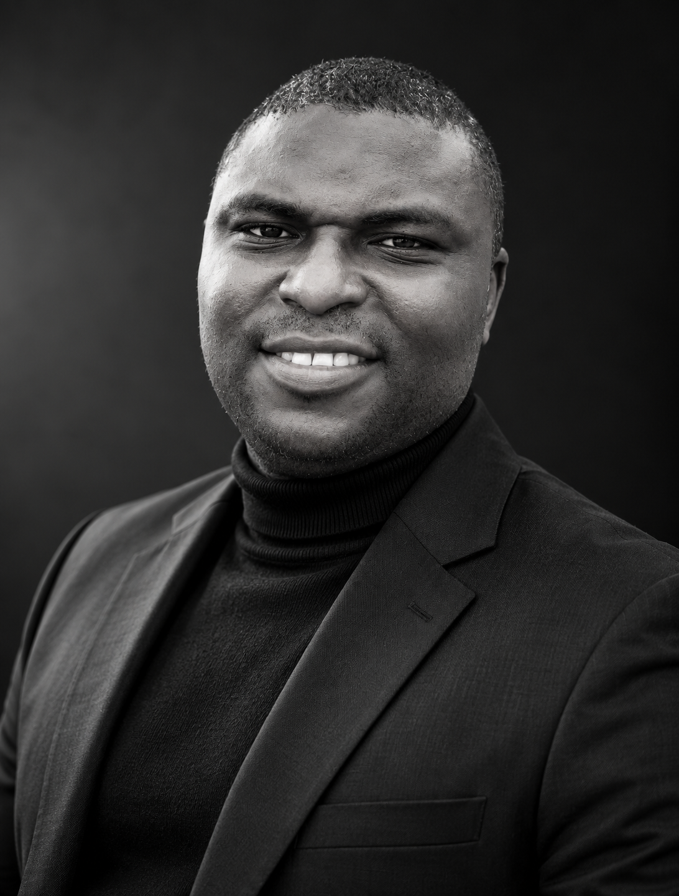

Reporting & stewardship
Public-sector accounting, IPSAS and IFRS reporting, final accounts and budget implementation.
ACCOUNTING · FINANCE · EDUCATION
Chief Accountant · Chartered Accountant
Over 15 years in public-sector accounting, financial reporting, auditing and professional training—strengthening accountability and helping people make better financial decisions.
● ONDO STATE, NIGERIA

CHARTERED ACCOUNTANT
From institutional reporting to the classroom, I connect sound financial practice with clear communication, thoughtful analysis and a steady commitment to integrity.
01 / ABOUT
I’m a Chartered Accountant, public & private-sectors finance professional, consultant and tutor based in Ondo State, Nigeria.
As Chief Accountant and Head of the Final Accounts Unit, Bursary Department, Adeyemi Federal University of Education, I lead financial reporting, support audit coordination and help strengthen financial controls. I bring an analytical, collaborative approach to complex accounting work and to the teams behind it.
Alongside my institutional work, I teach at the AFUED ICAN Study Centre and run Adroit Business Academy. My interests include transparent public financial management, forensic auditing, professional education and using data to make financial decisions clearer.
02 / EXPERTISE
Public-sector accounting, IPSAS and IFRS reporting, final accounts and budget implementation.
Audit management, external audit coordination, forensic auditing and management responses.
Financial compliance, internal controls, asset safeguarding and process improvement.
Financial consulting, cost management, data analysis and advanced Excel.
03 / EXPERIENCE
Adeyemi Federal University of Education
Adeyemi Federal University of Education
Nourish Manufacturing Nigeria Ltd / AFUED Consultancy Services
04 / TEACHING & LEADERSHIP
Teaching Corporate Finance and Strategic Financial Management, with academic mentorship and professional examination preparation for accounting and finance candidates.
Corporate Finance · Strategic Financial ManagementPractical online training to develop learners’ analytical, financial and digital skills.
Financial Accounting · Advanced Excel · Financial Modelling · Forensic Auditing Tools05 / RESEARCH & WRITING
Bamidele, V. O., Adetunji, K. A., & Adediran, A. H. · Asian Journal of Economics, Business and Accounting
View DOI ↗ResearchGate ↗Adediran, A. H., Ganiyu, A. A., & Ashibi, B.
Completed M.Sc. dissertation · Ekiti State University, Nigeria
2013 IPSAS Training · A.J Silicon & ACE, Ondo
2017 Advanced Microsoft Excel · A.J Silicon, Lagos
2020 “Professional Accountants: Catalysts for Business Strategy and Economic Development” · Ilaro, Ogun State
2023 53rd ICAN Annual Conference, “Nigeria: Imperatives for Inclusive Development” · Abuja, 9–13 October
2025 Budget Symposium on the 2025 Ondo State Budget · ICAN, Akure
06 / EDUCATION & QUALIFICATIONS
Ekiti State University, Nigeria
Institute of Chartered Accountants of Nigeria
Ekiti State University, Ado-Ekiti
The Polytechnic of Ibadan, Oyo State
LET’S START A CONVERSATION
Whether you’re reaching out about a finance role, consulting, teaching or research, I’d be glad to connect.
Send an email ↗